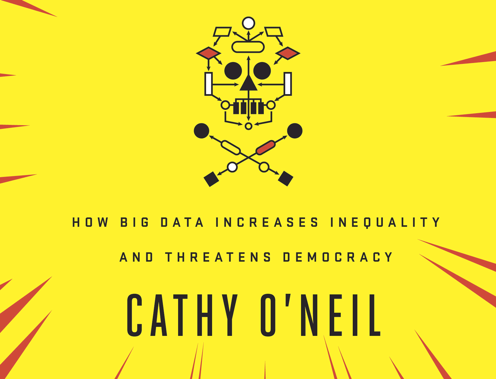

These are some quotes, and my notes from the book Weapons of Math Desctruction by Cathy O’Neil.

1. Bomb Parts: What is a Model?
This chapter compares baseball models to that of a family diet plan, and a questionnaire given to inmates that categorizes their recidivism.
Note: WMD stands for Weapons of Math Destruction (like the title of the book).
“Baseball is an ideal home for predictive mathematical modeling… and it serves as a useful contrast to the toxic models, or WMD’s that are popping up in so many areas of our lives. Baseball models are fair, in part because they are transparent. Everyone has access to the stats and can understand more or less how they’re interpreted… Baseball also has strict rigor. Its gurus have an immense data set at hand, almost all of it directly related to the performance of players in the game. Moreover, their data is highly relevant to the outcomes they are trying to predict… Most crucially, that data is constantly pouring in, with new statistics… Whatever they learn, they can feed back into the model, refining it. That’s how trustworthy models operate. They maintain a constant back-and-forth with whatever in the world they’re trying to understand or predict. Conditions change, and so must the model.”
“A model, after all, is nothing more than an abstract representation of some process.”
“There would always be mistakes, however, because models are, by their very nature, simplifications. No Model can include all of the real world’s complexity or the nuance of human communication.”
“A model’s blind spots reflect the judgments and priorities of its creators.”
“Whether or not a model works is also a matter of opinion. After all, a key component of every model, whether formal or informal, is its definition of success.”
“Racism, at the individual level, can be seen as a predictive model whirring away in billions of humans minds around the world. It is built from faulty, incomplete, or generalized data… Needless to say, racist don’t spend a lot of time hunting down reliable data to train their twisted models. And once their model morphs into a belief, it becomes hardwired. It generates poisonous assumptions, yet rarely tests them, settling instead for data that seems to confirm and fortify them. Consequently, racism is the the most slovenly of predictive models. It is powered by haphazard data gathering and spurious correlations, reinforced by institutional inequalities, and polluted by confirmation bias.”
“Regardless of whether the issue of race comes up explicitly at trial, it has long been a major factor in sentencing. A University of Maryland study showed that in Harris County, which includes Houston, prosecutes were three times more likely to seek the death penalty for African Americans, and four times more likely to seek the death penalty for Hispanics, than for whites convicted of the same charges. That pattern isn’t unique to Texas. According to the American Civil Liberties Union, sentences imposed on black men in the federal system are nearly 20 percent longer than those for whites convicted of similar crimes. And though they make up only 13 percent of the population, blacks fill up 40 percent of America’s prison cells.”
“The question, however, is whether we’ve eliminated human bias or simply camouflaged it with technology.”
“A 2013 study by the New York Civil Liberties Union found that while black and Latino males between the ages of fourteen and twenty-four made up only 4.7 percent of the the city’s population, they accounted for 40.6 percent of the stop-and-frisk check by police.”
“The LSI-R questionnaire has been given to thousand of inmates since its invention in 1995. Statisticians have used those results to devise a system in which answers highly correlated to recidivism weigh more heavily and count for more points. After answering the questionnaire, convicts are categorized as high, medium, and low risk on the basis of the number of points they accumulate. In some states, such as Rhode Island, these tests are used only to target those with high-risk scores for anti recidivism programs while incarcerated. But in others, including Idaho and Colorado, judges use the scores to guide their sentencing. This is unjust. The questionnaire includes circumstances of a criminal’s birth and upbringing, including their family, neighborhood, and friends. These details should not be relevant to a criminal case or to the sentencing… the model itself contributes to a toxic cycle and helps to sustain it. That’s a signature quality of a WMD.”
“[Healthy models] are transparent and continuously updated, with both the assumptions and the conclusions clear for all to see.”
“So to sum up, these are the three elements of a WMD: opacity, scale, and damage.”
“And here’s one more thing about algorithms: they can leap from one field to the next, and they often do. Research in epidemiology can hold insights for box office predictions; spam filters are being retooled to identify the AIDS virus.”
2. Shell Shocked: My Journey of Disillusionment
Most of this chapter covers the 2008 housing market crash.
“Summers had troubles with faculty, though. And professors had risen up against him in part because he suggested that the low numbers of women in math the hard sciences might be due to gender inferiority - what he called the unequal distribution of”intrinsic aptitude”. After Summers left the Harvard presidency, he landed at Shaw. And I remember that when it came time for our founder, David Shaw, to address the prestigious trio, he joked that Summers move from Harvard to Shaw had been a “promotion”.”
“If you want a metaphor one commonly used in this field comes from sausages. Think of morgages as little pieces of meat of varying quality, and think of the mortgage-backed securities as bundles of the sausage that result from throwing everything together and adding a bunch of strong spices. Of course, sausages can vary in quality, and it’s hard to tell from the outside what went into them, but since they have a stamp from the USDA saying they’re safe to eat, our worries are put aside… The strategy was simply to write unsustainable mortgages, snarf up the fees, and then unload the resulting securities - the sausage - into the booming mortgage security market.”
“In one notorious case, a strawberry picker named Alberto Ramirez, who made
$14,000 a year, managed to finance a$720,000 house in Rancho Grande, California. His broker apparently told him that he could refinance in a few months and later flip the house and make a tidy profit. Months later, he defaulted on the loan.”“In a federal lawsuit, Baltimore officials charged Wells Fargo with targeting black neighborhoods for so-called ghetto loans. The bank’s”emerging markets” unit, according to a former bank loan officer, Beth Jacobson, focused on black churches. The idea was that trusted pastors would steer their congregants toward loans. These turned out to be sub prime loans carrying the highest interest rates. The bank sold these even to borrowers with rock-solid credit, who should have qualified for loans with far better terms. By the time Baltimore filed the suit, in 2009, more than half of the properties subject to foreclosure on Well Fargo loans were empty, and 71 percent of them were in largely African American neighborhoods. (In 2012, Wells Fargo settled the suit, agreeing to pay
$174 million to thirty thousand victims around the country.)”“The first false assumption was that crack mathematicians in all of these companies were crunching the numbers and ever so carefully balancing the risk… Unfortunately, this just wasn’t the case. As with so many WMDs., the math was directed against the consumer as a smoke screen… Even rigorous mathematicians - and there were a few - were working with numbers provided by people carrying out wide-scale fraud.”
“I was especially disappointed in the part that mathematics had played. I was forced to confront the ugly truth: people had deliberately wielded formulas to impress rather than clarify.”
“Throughout my time at the hotline, I got the sense that the people warning about risk were viewed as party poopers or, worse, a threat to the bank’s bottom line. This was true even after the cataclysmic crash of 2008, and it’s not hard to understand why. If they survived that one - because they were too big to fail - why were they going to fret over risk in their portfolio now?”
“My challenge was to design an algorithm that would distinguish window shoppers from buyers. There were a few obvious signals. Were they logged into the service? Had they bought there before? But I also scoured for other hints. What time of day was it, and what day of the year? Certain weeks are hot for buyers… My algorithm would place a higher value on shoppers during these periods, since they were more likely to buy.”
“A young suburbanite with every advantage - the prep school education, the exhaustive coaching for college admission tests, the overseas semester in Paris or Shanghai - still flatters themselves it is their skill, hard work, and prodigious problem-solving abilities that have lifted them into a world of privilege. Money vindicates all doubts. And the rest of their circle plays along, forming a mutual admiration society.”
“… a false sense of security was leading to widespread use of imperfect models, self-serving definitions of success, and growing feedback loops.”
“The algorithms would make sure that those deemed losers would remain that way… I could barely keep up with all the ways I was hearing of people being manipulated, controlled, and intimidated by algorithms.”
3. Arms Race: Going to College
This chapter discuses U.S. New’s college ranking, and what schools, students, and entrepreneurs do to get a leg up.
“… editors of U.S. News tried to figure out what they could measure. This is how many models start out, with a series of hunches. The process is not scientific and has scant grounding in statistical analysis. In this case, it was just people wondering what matters most in education, then figuring out which of those variables they could count, and finally deciding how much weight to give each of them in the formula… The trouble was that the rankings were self-reinforcing… If Harvard, Stanford, Princeton, and Yale came out on top, it would seem to validate their model, replicating the informal models that they and their customers carried in their own heads. To build such a model, they simply had to look at those top universities and count what made them so special… Now, if they incorporated the cost of education into the formula, strange things might happen to the results. Cheap universities could barge into the excellence hierarchy. This could create surprises and sow doubts. The public might receive the U.S. News rankings as something less than the word of God. It was much safer to start with the venerable champions on top. Of course they cost a lot. But maybe that was the price of excellence. By leaving cost out of the formula, it was as if U.S. news had handed college presidents a gilded checkbook. They had commandment to maximize performance in fifteen areas, and keeping cost low wasn’t one of them. In fact if they raised prices they’d have more resources for addressing the areas where they were being measured.”
“As colleges position themselves to move up the U.S. News charts, they manage their student populations almost like investment portfolio.”
“Students in the Chinese city of Zhongxiang had a reputation for acing the national standardized test, or gaokao, and winning places in China’s top universities. They did so well, in fact that authorities began to suspect they were cheating… The next year, as students in Zhonqxiang arrived to take the exam, they were dimayed to be funneled through metal detectors and forced to relinquish their mobile phones… The response to this crackdown on cheating was volvanic. Some two thousand stone-throwing protester gathered in the street outside the school. They chanted,”We want fairness. There is no fairness if you don’t let us cheat.” It sounds like a joke, but they were absolutely serious. The stakes for the students were sky high. As they saw it, they faced a chance either to pursue an elite education and a prosperous career or to stay stuck in their provincial city, a relative backwater.”